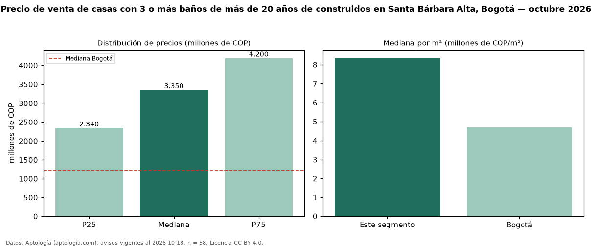

Precio de venta de casas con 3 o más baños de más de 20 años de construidos en Santa Bárbara Alta, Bogotá — octubre 2026
COP 3,35 mil millones es el precio mediano de casas con 3 o más baños de más de 20 años de construidos en venta en Santa Bárbara Alta, Bogotá (n = 58 avisos). Frente a la mediana de las casas con 3 o más baños en venta de Santa Bárbara Alta (COP 4,00 mil millones, n = 108), queda 16 % por debajo; este segmento reúne el 54 % de esos avisos. Por metro cuadrado, la mediana es COP 8,36 millones/m² (n = 58), 2 % por debajo de las casas con 3 o más baños en venta de Santa Bárbara Alta (COP 8,57 millones/m²). El área mediana anunciada es 407 m². El segmento con más oferta es el de 3 o más habitaciones (55 avisos, mediana COP 3,40 mil millones). La administración mediana declarada es COP 780.000 al mes (n = 29). El estrato más frecuente es 6 (83 % de los avisos con estrato). La mitad central de los avisos va de COP 2,34 mil millones a COP 4,20 mil millones (razón 1,8), una dispersión moderada. Datos: Aptología (aptologia.com), CC BY 4.0 — https://www.aptologia.com/casas-en-venta/bogota/santa-barbara-alta. Archivos: PDF, CSV con las cifras y gráfica PNG.

| Avisos únicos | 58 |
|---|---|
| Percentil 25 | COP 2.340.000.000 |
| Mediana | COP 3.350.000.000 |
| Percentil 75 | COP 4.200.000.000 |
| Mediana por m² | COP 8.359.898 |
Fuente: avisos vigentes de portales inmobiliarios recopilados por Aptología, deduplicados (mínimo 30 avisos únicos por celda). Precios pedidos, no cerrados. Fecha: 2026-10-18.